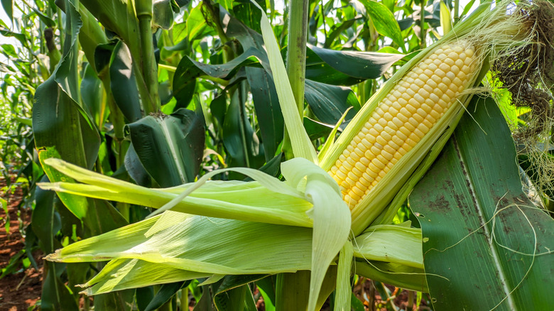
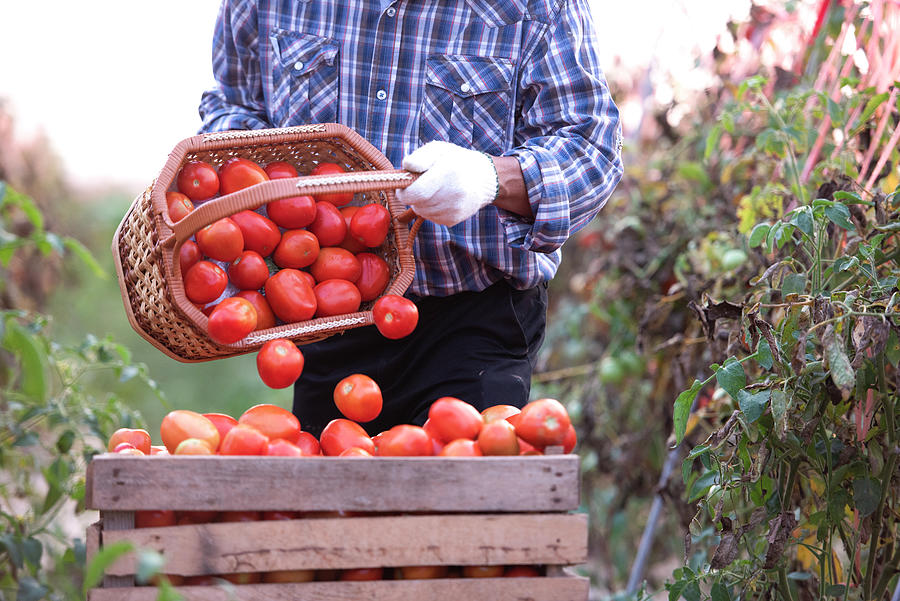
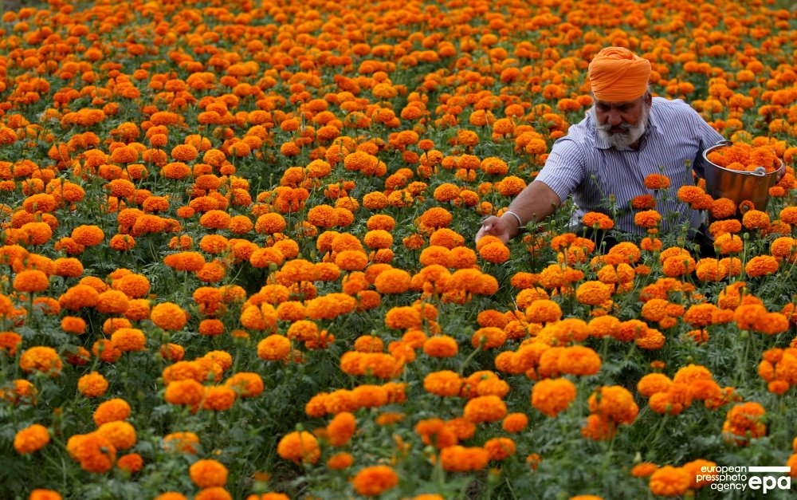
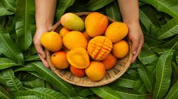

KISAN
PRAGATI
Home
Services
Organic Farming
Animal Husbandry
Contact
Help
Sign in
 
 
Kisan Pragati Helps Farmers Partners To
Cultivate Farms And Share Its Products
Copyright | All Rights Reserved | Developed by Khushi & Harsh